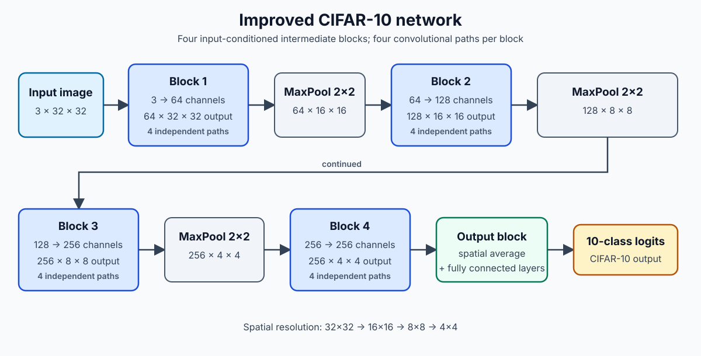
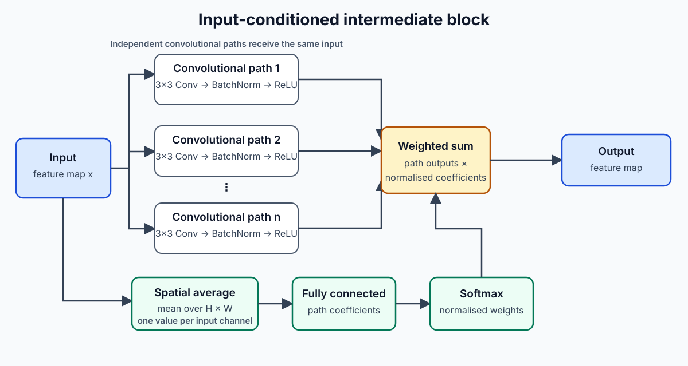
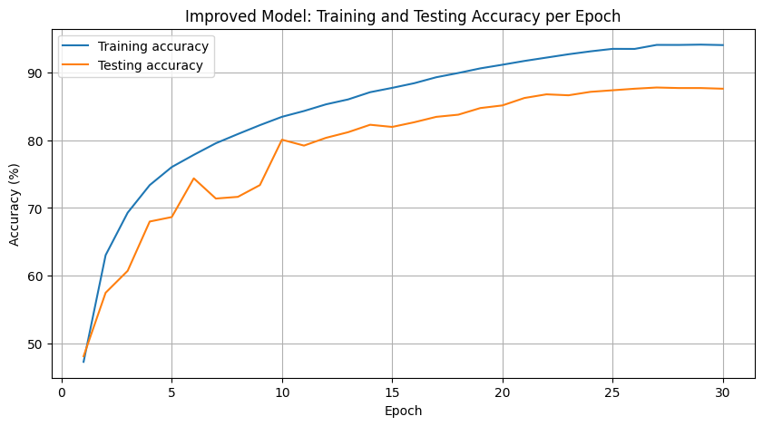
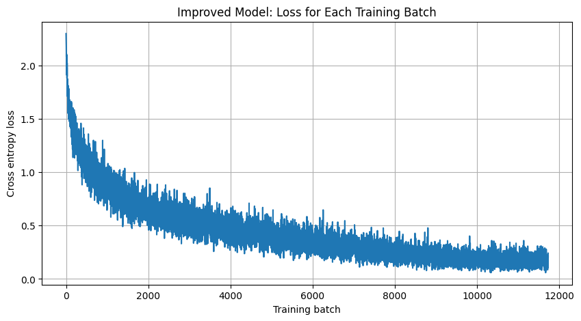
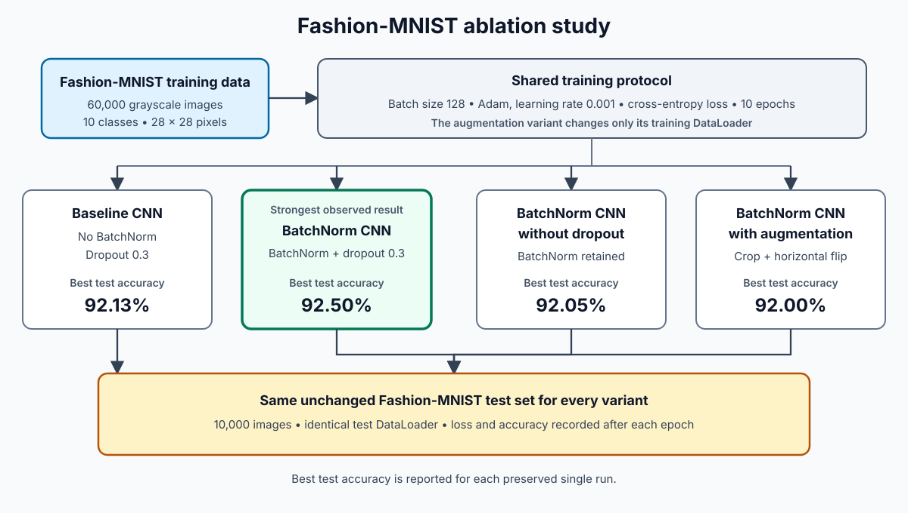
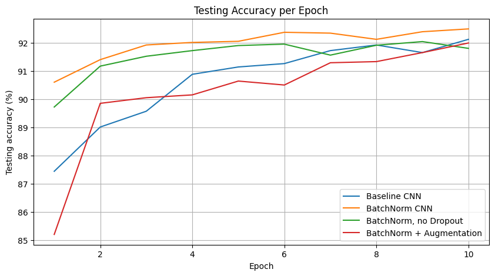

CIFAR-10
Best test accuracy from the improved model, recorded at epoch 27.
Deep Learning · Computer Vision
A custom input-conditioned convolutional network for CIFAR-10 and a controlled Fashion-MNIST ablation study, implemented and evaluated with PyTorch.
01
Two connected experiments investigate architecture design, optimisation and generalisation in image classification.
For CIFAR-10, I implemented a CNN whose intermediate blocks learn input-dependent weights for several parallel convolutional paths. I improved the initial model by increasing width and path count, adding augmentation and refining optimisation. For Fashion-MNIST, I compared four variants under the same 10-epoch budget to isolate the effects of batch normalisation, dropout and augmentation.
The notebooks retain training histories, evaluation outputs and plots, while the report documents the methodology and limitations.
02
03
Best test accuracy from the improved model, recorded at epoch 27.
Gain over the initial CIFAR-10 model's 84.76% result.
Best result, produced by the BatchNorm CNN with dropout.
04
The network dynamically combines parallel convolutional transformations for each input.
Each intermediate block sends the same feature map through independent convolutional paths. Channel-wise spatial averages pass through a fully connected layer and softmax to generate combination coefficients. Four blocks increase channel depth while max pooling reduces spatial resolution from 32×32 to 4×4 before the final ten-class output.


05
The improved CIFAR-10 model used random cropping, horizontal flipping, cross-entropy loss, AdamW, weight decay and cosine-annealing learning-rate scheduling. Loss declined while test accuracy peaked at 87.81%; the widening train-test gap provided evidence of some overfitting.




06
Maintaining compatible dimensions across parallel paths and their weighted combination.
Improving test performance while monitoring a growing training-to-test gap.
Holding the Fashion-MNIST budget constant so architectural changes remained interpretable.
Recognising the effect of repeated test evaluation, single runs and a short augmentation budget.
07
08
The repository contains both notebooks, recorded outputs, diagrams, figures, requirements and reports.